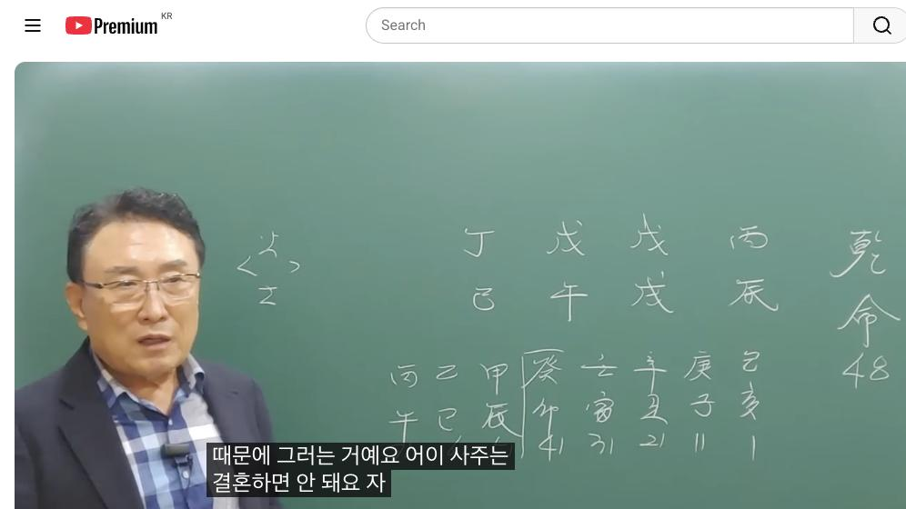
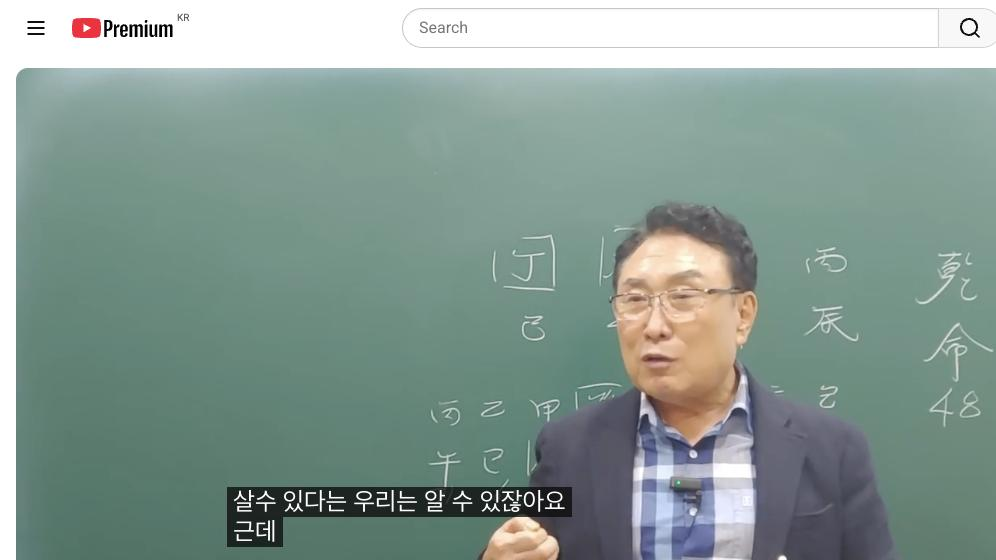

남촌물상TV 전체 문서 › 동영상 V0015
[실전사례]5 이런 명조는 절대 결혼하지 마세요

| 문서 번호 | V0015 (동영상) |
|---|---|
| 영상 URL | https://www.youtube.com/watch?v=QGfGbo7pwVU |
| 영상 ID | QGfGbo7pwVU |
| 게시일 | 2023-10-16 |
| 길이 | 27:33 (1653초) |
| 조회수 | 28,731회 (수집 시점 기준) |
| 카테고리 | People & Blogs |
| 자막 | ko (자동생성) |
| 수집 시각 | 2026-08-30 19:08 (KST) |
영상 설명 (YouTube 설명 원문 그대로)
단명사주도 이렇게 하면 수명연장 할 수 있다 #단명사주 #천간합 #실전사례 #결혼 #수명연장 #소름돋는
전체 자막 (592구간 · 타임스탬프 클릭 시 해당 장면으로 이동)
[0:01]자 오늘 이제에 이런 사주를 한번
[0:04]공개적으로 또 하겠습니다 아 지금
[0:07]밴드에 올린 사주가 여러분들이 48세
[0:11]남자예요 그 이제 이분 같은 경우는
[0:14]저한테 예 6년 전에 왔을 때 너는
[0:17]결혼하면 안 돼 그리고 어 건강
[0:21]이상이 와서 문제가 될거다 라고는
[0:24]얘기를 했어요 근데 보통 우리들이
[0:26]일반적으로 어 상담을 하고 하신
[0:29]분들이이
[0:31]어떤 예상이 오느냐 불다가 자기가
[0:34]몸이 아프다든가 그 소리를 들었을 때
[0:37]그 사람은 다시 찾아오게 되는 거예요
[0:39]그래서 이제 찾아온 적선 결과 가지로
[0:43]본인이이 현재 이제 수술을 해
[0:45]입장이고 암 선고를 받았다 이렇게
[0:48]해서 찾아왔습니다 선생님 얘기가 그때
[0:50]너무 적중했다 자기도 지금 살아보니
[0:53]너무 깜짝 놀랬다 이제 이렇게 그
[0:56]하는 말씀을 드린 사주에 그래서
[0:58]공개를 안 시키려다가 여러분들
[1:01]질병에 대해서 확실히 알고 넘어 좋을
[1:03]것 같아서 설명을
[1:06]드립니다 자 48세의 남자 병진 무술
[1:10]무호
[1:12]정사다시 뭐만 있어요 지금 뭐만
[1:15]있어요 자 화와 토만 있는
[1:19]사주다 그래서 보통 보면 우리들이
[1:21]이제 고전 배우신 분들은 무조건
[1:24]스님으로 얘기하죠 하당 스 스님 자다
[1:28]이렇게 얘기하는데 그 말도의 있습니다
[1:30]왜이 사주는 결혼하면 잘 안 되기
[1:33]때문에 그러는 거예요 어이 사주는
[1:35]결혼하면 안 돼요 자 지금 중요한
[1:39]것은 사람이 태어나서 결혼도 하고
[1:43]과정도 갖고 다 누릴 것 누려보고
[1:45]사는게 세상인데 결혼을 하지 말라
[1:48]했을 때 안 한 사람 누구냐 신부
[1:50]그다음에 스님 이런 분들이 결혼을
[1:53]안기 때문에 우리들은 이제 그걸
[1:55]가지고 어 소위 화토 중당 사주다
[1:58]그래서 스임 해라 이제 그렇게
[2:00]얘기하는데 그러면 왜이 우리가 그런
[2:03]얘기를 나왔냐고 얘기를 하면은 고조는
[2:06]실질적으로 답변 주게 굉장히
[2:08]어렵습니다 물상이 쉬워요 물상론 쉬워
[2:12]자 무슨
[2:13]얘기냐 여기에 제에 없는게 잠깐 먼저
[2:17]설명하고 드릴게요 없는게 뭐가
[2:19]없습니까 자 첫째 목이 없죠 자 목이
[2:23]없는 건 나의
[2:25]관이죠 자 둘째 뭐가어요 자 첫째
[2:30]재관 따졌을 때 뭡니까 수지 물이
[2:33]없죠 그죠 자 물이 없다는
[2:36]얘기는 재물이 없다
[2:39]얘기죠 여자 재물 그다음에 금이
[2:43]없죠 자 금이
[2:46]없다 고지는 식상이 하지뭐 식상 쓰도
[2:49]안 합니다 우리 물상 물에서는 뭐
[2:50]식상이 굳이 뭐 그 뭐 편제 정제
[2:52]따질 필요도 없고요 가장 쉽게 사주를
[2:56]볼 수 있고 어떻게 하면 쉬운
[2:58]방법으로 여러분들한테 그 이해 수
[3:00]있느냐 굉장히 중요한
[3:02]거예요 자 그러면
[3:04]어이 사람의 이제에 잘 재를 만들 수
[3:08]있는 데가 어디 어디냐 또 그 어
[3:11]목을 만들 수 있 어디냐 소위 재관
[3:13]위주로 보기 때문에에이 사람
[3:16]입장에서는 지금 재관을 만들 수 있는
[3:19]글씨가 여기죠 자 여기에서
[3:22]정화에서 임수를 끌고 온다 그다음에
[3:26]정림 한 목이 되면 을목이 된다는
[3:28]계산이 이렇게 예 그러면 재관을
[3:32]동시에 만든 글씨는 뭐예요 정하죠 자
[3:38]그러면 한 개든 더 생각해서 우리는
[3:41]임수를 끌어온다는 뭐 밑에는 뭘 달고
[3:44]와요 해수를 달고 오죠 항시 우리는이
[3:48]임수를 끌은 데는 지지에는 해수가
[3:51]움직이니까 인신사 개념도 가지고 있다
[3:54]그 얘기는 해하고 인연이 있다
[3:56]이렇게도 볼 수 있는 거예요 그래서
[3:59]우리가 간단하게
[4:01]설명을 해보면 재관을 만드는 글씨는이
[4:04]자리 있다 아 그러면이
[4:08]사람이이 결혼도 이때 한게 좋지 않냐
[4:11]그렇게 얘기하죠 근데 그러니까 살 때
[4:14]이민 대원가 좋네 이렇게 대부분
[4:16]하겠죠 그런데 문제는 인이 왔을 때
[4:20]술이에요 그러면 나무가 심어져서도
[4:23]불에 타보는 것 이렇게 이해하시면
[4:24]되잖아요 불이 불바다가 되니까 자
[4:27]이제 이런 것을 눈에서 보시면 된다
[4:30]그럼 이제 결혼을 하면 우리가 내가
[4:31]안 좋다고 그랬는데 왜 결혼하면 안
[4:34]좋을까요 하는 얘기가 있을 거예요
[4:36]그럼 우리들은 어 고전에서는 결혼한
[4:39]시기를 잘 모르잖아 우리는 어떤
[4:41]시기라 그랬어요 토일 주는 나무를
[4:44]심어질 때가 결혼한다고 그랬잖아요
[4:46]그죠 그러면 고전하고 차이점이 뭐냐
[4:50]여자 사주도 목으로 보면 관이 되고
[4:54]남자 사주도 목은 가이고 이렇게
[4:56]구별한다 말이에요 그러면 자 왜 여자
[4:58]여자가 네가 사주 저 뭐야 똑같은
[5:01]관이 되고 죄야 반대로 생각하고 있네
[5:04]이렇게 하고 좀 떠들 수가 있다
[5:06]그랬어요 근데 우리는 물상 론에서이
[5:10]무토에 무토에 나무가 심어져야 돼
[5:14]목이
[5:15]심어졌다 자 땅에 나무로 심어지면
[5:19]뭔가 안정된 가정이 이루어진 걸로
[5:21]보라 그렇게 하시잖아요 물상 그래요
[5:23]그래서 우리는 지장가 포태 용신
[5:26]신살론 다 쓰지 않아요 그니까
[5:29]여러분들이 공부 일 쉬운 공부 그래서
[5:32]자연법칙을 인간의 법칙으로 이걸
[5:34]원칙으로 해서 사주를 보기 때문에
[5:37]가장 쉬운 방법으로 사주를 볼 수
[5:39]있다 그러면 이분이
[5:42]이분이에 모기와 심을 관이 심어졌다
[5:45]그러잖아요 우리가고 관유 와서 심다
[5:47]그것이 아니라 불상 물에서는 그 그
[5:50]관리를 떠나서 땅에서 나무를 심어지면
[5:54]한 가정이 지어진 걸로 보라 그
[5:55]말이에요 이게 불사문이에요 이것을
[5:59]하지 않으면 상적인 해석은 어렵다 자
[6:02]그러면 만약에이 사주가 결혼을 했다
[6:06]나무가 심어지게 그럼 자 무토가
[6:09]갑목이 심어진게 좋겠죠 우리는이 목이
[6:12]심어진 것은 넓은 땅에는 갑목이
[6:15]심어진게 좋다 했단 말이에요 자
[6:18]그러면 만약 가상으로 해서 가상해서
[6:21]목이 심어졌다 화장 합시다 그러면
[6:24]갑목을 심었을 때 뭐가 와요 뿌리에
[6:28]목이 오잖아요 여기에 목을 신게
[6:32]뿌리는 임목이 오게 돼 있다이
[6:34]말이에요 뿌리 조서 그러면 자 임목이
[6:37]오면은 뭐할까 수이
[6:40]되죠 그럼 자 사주 원국에 물이
[6:43]하나도
[6:45]없는데 불 받아 됐잖아요 그 결혼하면
[6:48]돼요 안 돼요 안 된다 이런 이론을
[6:52]정확하게 우리 물에서 설명 해야
[6:55]됩니다 근데 고전에서는 왜 결혼하면
[6:58]안 돼 하는 것이 정확하게 없어
[7:00]목이 여기 저 뭐야 제가 안 와서
[7:03]결혼을 못해 이렇게 생각한단 말이야요
[7:05]제가 없기 때문에 결혼을 안 돼
[7:06]이렇게
[7:07]생각하건데 물상론 아고 해석하는
[7:09]차이점이 거기에서 헷갈리고 서로 틀린
[7:13]과정이기 때문에 고전에서는 그 방법을
[7:15]쓰러 하시고 우리 물상론는 이렇게
[7:18]쓰시는게 정확하다고 이해하시면 좋다
[7:21]자 그럼 결혼하면 안 되죠 안 되는
[7:23]거예요 그럼 자 한번이 사람이이 결혼
[7:26]시점을 볼까요 그러면
[7:31]이 글씨 중에서도 갑목이 와도 좋겠죠
[7:35]어 목이 와면 더 좋은데 목이 안
[7:37]오고 있어요 그까 쭉 목이라 것이
[7:39]와요 안 오잖아요 자 기묘월 살 경자
[7:44]11살 신축 1살 아 이민 여기서
[7:47]왔단 말이야 자 여기서 오니까 자
[7:51]제가 왔으니까 무조건 우리는 뭐라게
[7:53]고전에서 재 와서 결혼할 거야 했단
[7:56]말이에요 자 부부 궁도 합이 됐네
[7:58]좋아요
[8:00]근데 그것이 좋다 좋은 것이 아니다이
[8:02]말이에요 왜 사주가 구성에
[8:08]있어서는이 정림 한목을 해서 글씨가
[8:11]만들어지는 거죠 목이라는 글씨가
[8:13]탄생한 거예요 그러니까 우리들이 잘
[8:15]생각해
[8:18]보면 내 관 내가 땅에 나무와 심어질
[8:22]때 결혼을 해라고 했다 그 말이에요
[8:25]근데 정이 31 대운에 정하가 정화와
[8:31]정립 한 목이 됐다 그 말이죠 그럼
[8:33]무슨 목이 됐다 그러세요 을목이
[8:34]됐다고 그러잖아요 그러면 이때 결혼을
[8:38]해도 결과적으로 뭐 가냐 여기에
[8:41]만나도 을목이 심어진다 보시면 돼요
[8:43]을목이 심어진다 자 그러면 지지로
[8:46]뭐가 따라요 을목의 뿌이 묘가 따르면
[8:50]여기 여기 지금가 있죠 자 묘 왔네
[8:54]사유축 유금이 되네 뭐 해명이 되네
[8:57]다 그럼 뭐예요 자음이 것도 되잖아요
[9:00]자오 여유가 될 때 결 100% 다
[9:02]실패 물상 해 보세요 여러분 실전을
[9:04]해봐도 너무 적중이 좋아 자 그래서이
[9:07]사람은 결혼이 안 되는 거예요 자
[9:10]그러 41 대원에 가서 한번 재운이
[9:13]왔기 좋겠다 그럼 우리 이제 뭐라고
[9:15]하냐 비견을 제거한다 그렇잖아요 자
[9:19]그럼 여기 글씨 하고 제거가 되겠죠
[9:21]무기 파로 자 그러면 무게 파가 되죠
[9:28]그렇잖아요 그 무 합 돼서 우리는 또
[9:30]뭘로 봐 곧 우리 물에서는 무게 합은
[9:34]기토 안이에요 토이에요 그럼 갑목을
[9:36]끌어다 심으라 거 아니에요 그러면 자
[9:38]임묘 진이 돼도이 진토는 저기 술토와
[9:43]진술 충분하게
[9:44]돼 자 그러니까 여기에 이제 이저
[9:48]진토가 우리이
[9:50]술토와 충을 하게 되면은 뭐 어떨까요
[9:54]충을 하게 된는 용암이 폭발한다고
[9:56]제가 그랬잖아요 우리 물상이 그렇게
[9:58]해석한다 그기 때 때문에 결혼이 안
[10:00]되는 거예요이
[10:02]사람은 될 수가 없어요 그런데 그때
[10:05]당시 저하고 그 어 6년 전에
[10:08]상담하실 때도 결혼 하지 마라 근데
[10:11]자기가 좋아한 여자가 있는데 결혼을
[10:14]해야 될까요 했다 그 말이에요 그
[10:16]나는 결혼 너 결혼하면 실패해
[10:18]실패하고네 건강 이상이 오기 때문에
[10:20]하지 마라고 주장을 했다 근데 지금에
[10:23]이제 사정이 떡 완서 어떤 현상에
[10:25]왔을까요 이제 어 다급하게 됐잖아요
[10:28]자기 몸이 와서 어 암을 상기 진단을
[10:30]받았다 그래서 수술를 해야 된다 이번
[10:33]달에 수술를 제가 10일 날 수술
[10:35]했습니다 근데 이제 이런 수준를
[10:38]가지고 그럼 무슨 수술를 했겠냐 자
[10:40]여러분 잘 보세요 우리는 이제
[10:42]인체에서 물을 가지고 있 데는 방광과
[10:46]신장이 그죠 자 신장과 반광이
[10:51]그러면이 신간 신장과 반광이
[10:54]마르겠지 그러면 실 제일 우선 주이
[10:56]뭐냐면 신장이 우선 신장은 모든
[11:00]노폐물을 걸러내고 거기에서 꺼기
[11:03]걸러내고 다 우리가 배출되는 그
[11:06]소변으로 가고 뭐 다 배출 시키잖아요
[11:09]그 망가지는 신장이 우선이에요
[11:11]그래서 신장이 말라다 그 말이에요
[11:15]그래서이 사람은 신장암 현재 상기를
[11:17]받았습니다 그리고 이제에 지금 그
[11:20]천안에서 수술 하게 돼 있는데 그래서
[11:23]저한테 찾아온 거예요 교수님
[11:25]어쩌겠습니까 내가 그때 그때 교수님
[11:27]말만 잘 들었어도 제가 그런 일이
[11:29]없었을
[11:31]건데요 겠죠 그러니까 제가 그것들
[11:34]물어보러 온 거죠 근데 하지
[11:36]말하겠다고 내가 이런 사람들을
[11:38]결혼하면 안 되는 거예요 그래서
[11:41]우리들은 어 공부하실 때 이제에 물론
[11:45]제가 그렇지 내가 하지 말라고도 안
[11:46]하겠어요 뭐 좋은 여자가 있다는데 그
[11:49]또 더군다나 우리 고전에서 모
[11:53]1주 일주에 우리가 그 어디 책이
[11:57]나오죠
[11:58]일주에 정이 좋아하는 절이 나오죠
[12:01]그래서 무주는 이성적인 욕망이 굉장히
[12:04]강한 사람이란 말이에요 그러니까 결혼
[12:07]자기는 여자 보니까 해야 되겠다
[12:08]이거예요 넌 하면 죽어 결론은
[12:11]이거였어요 그래서 제가 하지 마라
[12:15]그러면 너 너는 건강 이상이서는
[12:17]문제가 돼 했단 말이에요 그래서 좀
[12:20]안타까운 사주를 가지고 여러분들한테
[12:23]공부 차원에서 제 올렸습니다 그러
[12:25]이제 이런 사주들은 사주들은 병
[12:29]문제가 돼 또 살다 보면 결혼해도 안
[12:32]돼 얼마나 불행한 사주에 운이
[12:35]따라하지도 않아요 근데 우리들이
[12:38]이제에 물상 노에서 당시 이제 우리
[12:40]개운법 많이 따지지 않습니까 어떻게
[12:43]하면 우리가 사주를 개운을 시여서이
[12:47]사람이 오래 살 수 있고 더 행복을
[12:49]추구할 수 있느냐를 봐주는게 우리가
[12:52]일이에요 자 고전에서 지금 흔히들
[12:55]얘기가 뭐냐면 해외를 가라고 물상론
[12:58]그러니까 불쌍 람 한 사람은 맨날
[13:01]해외망 한다라고
[13:03]얘기합니다 근데 고전에 1300년
[13:06]2500년 전에 그러한 시대는 그
[13:11]시대의 철학을 반영한 거예요 그러면
[13:14]그때 당시 맘대로 해외를 가고 우리가
[13:16]들어둘 수 있는 그 여건이 아니잖아요
[13:19]지금 시대는 러볼 시대고 어떻습니까
[13:21]우리가 아침 부산서 밥을 먹고 자
[13:24]동경과 정신 먹고 다시 들어와서
[13:27]저녁도 먹 수는 시대예요
[13:29]이 정도로 시대가 그 그로벌 시대에서
[13:33]거기에서 따라서 현실에 따라서 맞춰
[13:36]주는 것 그데 시대 철학은 그 시대를
[13:40]반영한거다 그 말이에요 그래서 독일의
[13:42]해일처럼 철학은 시대 아들이다 한
[13:44]얘기가 저는 항시 염두에 두고 있고
[13:48]여러분들이 사주에 보시 는데도
[13:50]개운법이란 자체도 어떻게 하면이
[13:53]사람이 행복해 줄 수 있고 그 길을
[13:55]이끌어 나갈 수 있느냐고 알 수 있죠
[13:58]이런 것을 을 우리는 배우고 해야
[14:01]된다 그 말이야 근데 지금 고전한
[14:04]사람이 많아 물상 사람이 많아 물상
[14:06]사람은 불과 5% 안 돼요 볼 3
[14:10]4% 해도 안 돼요 경쟁률 최고예요
[14:12]경쟁률 최고입니까 해보셨어요 아이
[14:15]옆에 하라한테 갔다가 기분 나쁘다고
[14:19]보는 사람이 기분 나쁘다고 2만 원
[14:21]주고 갖고 나한테고 15만 원 주 어
[14:23]그거 봐요 그러니까 2만 원 주고
[14:26]와서 여기 우리 박님 한테는 15만
[14:28]원 주고 왔다이 말이에요 그래도
[14:29]아깝지 않다 여러분들이 상 상담하는
[14:33]것은 물론 차이가 있겠습니다마는
[14:36]우리는 물상론 궁화 보는 것도 상대가
[14:40]무슨 마음을 가지고 있는 것도 읽어낼
[14:42]수 있는
[14:44]안심법문 중요합니까 뭐 때문에 네가
[14:47]나를 만 좋아하고 뭐 때문에 네가
[14:49]나를 좋아해 하는 것을 우리는 사주를
[14:52]가지고 다 읽어낼 수 있어요 이게 제
[14:55]소위 제가 그 만든
[14:59]물상론이 기초 이론에서 자꾸 발전하다
[15:01]보면 안이 생긴다고 그랬었어요 그러면
[15:04]여러분들도 지금 고전하
[15:06]분들이이 숫자가 많다 보니까 시세에
[15:09]눌리지 근데이 관법이 더 많이 전파가
[15:14]되고 해야 돼요 제가 이제 중국에
[15:17]가서도 이제 이번 28일날 제가
[15:18]중국을 갑니다만 중국에 가서도 똑같이
[15:21]그 사람들이 중국
[15:23]그어 사주에 유명한 사람들하고 같이
[15:26]부닥쳐 봐도 제가 떨어지지 않아요
[15:29]그래서 그 사업가들이 저를 찾고 다시
[15:32]오라는 이유가 뭐냐 그 사람들이 다
[15:34]천억대 부자들이 그러면 그 사람들이
[15:37]저를 다시 만나고 싶고 다시 그
[15:40]초청한 이유가 그 세계에서 더 우리
[15:44]한국에 맞는 물상 론이 더 적중하기
[15:46]때문에 그 사람들이 저를 찾는
[15:48]겁니다이 다음에 이제 제가 중국 가서
[15:51]상담과 직접 녹화를 하다가 제가 한번
[15:54]유튜브나 한번 공개적으로 올릴
[15:57]겁니다 근데 여러분들이 이이 공부하실
[16:00]때에 차이점이라 그런 거예요 물상론
[16:04]해서 물상론 하니까 해외 가아 가니까
[16:06]자꾸 비방하고 하는 사람들이 뭐냐
[16:07]고정하는 사람 망해요 근데 상하겠죠
[16:10]왜 자기들이 그런 걸 안 배웠기
[16:12]때문에 근데 우리 물상 노서 배워요
[16:14]자 그 얘기는 왜 하느냐이 사람이
[16:17]애국을 갔을 때 어떤 현상이 오는가를
[16:20]한번 비켜 보자 저는 팔자는 바뀔 수
[16:23]있고 바뀌 져야 한다고 주장하는
[16:24]사람이 저다 그러면 항시 우리는 사주
[16:29]람 항시 못 살고 항시 어렵게 살아야
[16:31]되고 항시 이렇게 살아야
[16:33]되는가 그게 아니잖아요 모든 사람들이
[16:37]오늘보다 내일이 더 낫고 좀 더 좋은
[16:41]어떻게 하면 제가 잘 살 수 있을까요
[16:43]하고 여러분들한테 상담을 하게 되죠
[16:47]근데 그것을 여러분들이 대답을 못
[16:49]하면 안 되잖아요 이게 소위 이제
[16:51]우리는 개운법이라고
[16:53]얘기하는데 개운법이든 아니든 저는
[16:56]그걸 떠나서 뭔가 미래적인 학적
[16:59]면에서 추구할 수 있는 여건을 조성해
[17:01]주는게 제가 할 일이고 여러분들이 할
[17:04]일이다 굉장히 좋은 일 하고 있다이
[17:06]말이에요 그래서 제가 이제 하는 것은
[17:09]여기에 이제 물상론 대해서 이제 왜
[17:11]회의를 가야 되고 안 가야 하는 것도
[17:13]얘기하는데 아 당연히 그런 사람들
[17:17]이제 어 색다른 얘기니까 무슨 뭐
[17:20]해를 이렇게 저 비부하 사람들고
[17:22]하겠죠 그러나 여러분들은 굳굳하게
[17:25]소신껏 본인 의사를 전달해서
[17:27]상담하시는게 좋다고 분명히 말씀을
[17:29]드립니다 자 그러면이 사주가 우리가
[17:32]우리나라에서는 지금 보면 이런 거
[17:34]있잖아요 대부분이 아 미국과 문주와
[17:37]영국과 조하도 전부 다 저는이 물상
[17:40]해결 했어요 그러면 사주를 볼 때도
[17:44]뭐 외국만 하면 좋냐 어디 갈 건데
[17:47]모르잖아요 물상 다 알아 제가 오행을
[17:50]정했을 때 자 다시 한번 미국은 뭐
[17:53]미국은 경신 자 유럽은 뭐 신 신유
[17:57]중국은 뭐 진 무진 러시아 임 임자
[18:02]일본 병 병호 베트남 을사 을사 을묘
[18:07]자 자 이렇게 해서 각 나라 오행을
[18:11]저 나름대로 다 정해서
[18:14]봅니다 그러니까 우리는 어디를 가면
[18:16]좋다 어느 나라에 가서 네가 공부를
[18:19]하면 잘 거고 어느 나라에 가면 잘
[18:21]살수 있다는 우리는 알 수 있잖아요
[18:23]근데 그 얘기하니까 다른 사람도
[18:26]싫어해들이 외국 가라고 맨나 그런다고
[18:29]우리는 어느 나라까지도 시정해 준다
[18:31]그 말이에요 그러면 자 기토일주
[18:34]좋아한 나라는 어디냐 알잖아 우리는
[18:36]어디가 좋아한다 그랬어 기토 좋아 자
[18:39]호주 또 그다음에
[18:41]영국
[18:43]자 우리는 기토일주 선물 끼는
[18:46]나라예요 그러기 때문에 기토일주
[18:49]사람들한테 너 유학을 어디로 갈래 그
[18:51]영국 갈래 100%
[18:53]오해요 카나다 갈래 오케이 그저 호주
[18:56]호주 이런가 오케이저 해진 거예요
[18:59]그래서 우리들은 이런 것을 쉽게 그
[19:03]설명할 수 있고 어느 나라 가면 네가
[19:06]살 수 있고 느라고 하면 공부를 잘할
[19:08]수 있고 한 거 다 안다 그 말이에요
[19:09]근데 이제 고절한 분들은 그런 거 안
[19:12]들어 봤잖아요 그러니까 물상 하는
[19:14]사람들은 투자 때 맨날 해외만 가라
[19:17]우리 해외도 어디 가서 어떻게 하는
[19:18]걸 다 혀 주자네 가서 행위를 뭐
[19:20]하나까지 혀 준다 이거예요 이게
[19:22]물상론이에요 자 그러면이 사주를
[19:25]가지고 만약에 미국을 갔다고 생각해
[19:27]보자 만약에이 사주 미국을 가면
[19:30]좋을까요 예를 들어서 유럽을 가면
[19:32]좋을까요 구별해 봅시다 자 그러면
[19:33]미국은 뭐예요 경신이 자
[19:37]경신 자 그다음에 유럽은 뭐예요 자
[19:42]신유 자 이렇게 자
[19:47]신요
[19:49]그러면 우리는 자유가 될 때도 어떤
[19:52]행위를 하면 자유를 안 할 수
[19:54]있다라고 해줬고 해결 방법을 쳐줬어요
[19:57]그 쳐가는 방법 이게 물상 사주 보실
[20:01]때 여러분들이 어떻게 하면 네가이
[20:02]일을 해쳐 하고 이을 수 있어 하는
[20:04]것을 손님들이 오면 상담해 주고
[20:07]거기에 맞는 대답을 준다 그 말이에요
[20:09]자 그러면 자 일단은 경신을 대입시켜
[20:12]보자 자 경신하고 대입 식이니까 뭐가
[20:15]있어요 자 여기에서 재물이 생기까지
[20:18]그러면 자 경은 신금이 하나 경금이
[20:21]붙었다고 생각하시면 돼요 자 경급
[20:24]그다음 비지로 신이 부을 까지요
[20:27]그렇죠 자
[20:31]그러면 자 만약에 미국을 갔다 오면
[20:33]신이라 것은 신자진 되지만 사화 신오
[20:38]인신사 되잖아요 그럼 미국가 너 뭐
[20:41]잘할 거냐 물어보면 뭐 해야 돼
[20:43]마케팅 전략으로 가라 이렇게 정확하게
[20:45]답을 우 정해주고 있다이 말이에요
[20:47]얼마나 정확해요 그러면 미국을 가게
[20:50]되면 너는 어떤 건 마케팅 전략으로
[20:52]가라 그 자 미국에 가서 공부를 한다
[20:55]하면은이 사람이 어떤 현상이
[20:57]나오느냐 로 할 건데 자 우리는
[21:00]애국을 건너가면 뭘
[21:02]건너가요 바다를 건너 가잖아요 그럼
[21:05]자 아까
[21:06]여기에서이 이미 예측을 해 준게
[21:08]뭐냐면 네가 애국을 갈 수 있는
[21:12]여건은 여기에 정화에서 임수를 만들어
[21:14]줬다고 그랬잖아요 임수 뿌리는 해수에
[21:17]신사야 되는 거예요 그래서 이미 아까
[21:20]전제 조건 네가 살아 나갈 수 있는
[21:22]방 첫째는 모든 것은 탁수가 되든 안
[21:26]되든 모든 생명체는 물이 있어야 사는
[21:29]거 아닙니까 그래서 근본적인 목이
[21:32]오행 중에 살아 있는 오행이고 그
[21:35]목을 주체로 해서 우리가 오행을
[21:38]설명을 하고 해 나가는 거예요
[21:40]그러니까 자 외국을 가게 되면 해수가
[21:44]생겼고 또 천가은 공부하니까 뭐가
[21:46]생겼어 자 갑목이
[21:49]생겼잖아요 갑목이 생겼네 자 잘 봐요
[21:53]미국에서 공부를 하게 되면 큰 땅에
[21:55]나무 심어지고 그죠 꽃피지 정님 한목
[21:59]을목이 돼서 내 제자들이 많이 붙죠
[22:02]교수 사주가 돼버린
[22:04]거예요
[22:06]쉽게에서 국내에서 안 되는 사람도
[22:09]거기 외국에 와서 공부를 하 이런
[22:11]현상을 만들 수 있는거다이 말이에요
[22:14]이것을 우리는 현재 배우고 있고 이걸
[22:17]손님들한테 당제한 얘기해서 전해 줘야
[22:20]한다이 얘기예요
[22:25]자 미국에 가게 되면 새로운 땅이나
[22:28]또 생겼지
[22:29]자 세 개 됐죠 3대 1도 되고 미국
[22:33]주를 내가 세네 개 다길 것이다 해도
[22:35]돼 그렇잖아 선하게 해도 된다 그러면
[22:39]자 세개네 개 줄을 걸어 다길 때는
[22:42]너는 인신 사회 마케팅 전략으로 해도
[22:44]잘해 얼마든지 통변을 수 있는 길을
[22:48]우리는 물상론 해결할 수 있다이
[22:51]말이에요 이게 물론이에요
[22:53]얼마나 그 정확한 답을 더줘요
[22:57]근데 비방한 거 물상론 우리가 뭐
[23:00]해한다고 비방한 거 그 아무 타할
[23:02]필요 없어요 우리는 거기 가서 네가
[23:04]무엇을 하면 될 데까지도 다 정해 줄
[23:06]수 있다 자
[23:08]그다음이 사람이 이제 유럽으로 간다
[23:11]합시다 유럽 유럽 가서 네가 일하는
[23:12]무슨 일 하고 어떻게 해서 살
[23:14]것이냐를 전제해 보면 신죠 그러
[23:18]신라는 것은 여기에 신금이 붙을 거
[23:22]아닙니까 자 그러면 자 볼까요 아이고
[23:25]국가 가자리 가자리을 너는 자격증을고
[23:29]다게 좋아 자 그러면 합수 자
[23:32]물이 되게 재물이 돼요 안 돼요요
[23:34]재물이 되고 해를 가니까 물도 재물이
[23:37]돼요 이런 외국만 가면 잘 사는
[23:39]사주에 물 재물이 당기니까 그러면
[23:43]합이 온다는 얘기는 자 양감과
[23:47]은간 변면 정화로 변화 이건 그런
[23:50]개념이 없어 여기서는 여기서는 물을
[23:53]만들어 주느냐 자격증을 만들어 주느냐
[23:55]우리는 병 국가 자리에서 분해서
[23:57]병화를 만들면 면 국가 자격증을
[23:59]하는게 좋다라고 했고 또 거기에서
[24:02]재물을 만들 수 있다 얘기예요 그러면
[24:04]여기에 뿌리가 뭐예요 신금의 뿌리가
[24:07]유금 아닙니까 차 이거 봐라 참 좋네
[24:10]그러면 자 여기에서 만약에 금이란
[24:13]글씨가 하나 넣어 봅시다 진유합금
[24:16]되죠 자 그러면 자꾸
[24:18]볼까요 유음은
[24:21]뭐예요 먹는
[24:23]거 말하는 거 다 다 이런게 유금이
[24:27]속한 거 아니에요 그럼 자기가 공부를
[24:29]했다면 교육자로서 표현하는 외국을
[24:31]전공할 수도 있는 것이고 만약에
[24:33]자기가 사업을 한다고 들면 자 공부를
[24:35]많이 않고 사업을 할 경우는 입으로
[24:38]먹는 거 슈프 하고 음식도 만드는
[24:40]것도 하고 다 할 수 있는 거예요
[24:42]그러면이 사람이 만약에 유럽에서 그
[24:46]그 그 어떤 걸 배워 갖고 미국을
[24:48]갔다 더 좋은 거죠 셰프 셰프로 가면
[24:52]미국 가면 신수이 돼버려 신금이 붙으
[24:54]있아요 그 이런 사람들은 아까 무무
[24:58]두 개국 나라를 다길 수 있는 서주를
[25:00]가지고 있다이
[25:02]말이에요 그러니까 유럽에서 10%
[25:06]해하면서 배운 그 실력을 가지고
[25:08]미국에 가서 영업을 한다면이 사람
[25:10]대박나는
[25:11]거지이 이런 사주가 되는 거예요
[25:15]예 그때는 괜찮아 국내에서는 여자를
[25:18]가까이 만되는 사주다 그래서 단지
[25:23]옛날 고전에서 이런 사주를 가지고
[25:25]하토 중탕이 그냥 던져 버어 그럼
[25:28]너는 죽 놈이야 이렇게 딱 선을 어서
[25:32]전부 다 그렇게 사주를 만들었다 그
[25:35]말이에요 근데 지금
[25:37]세상에 잘하는 것도 많고 하고 싶은
[25:39]것도 많은데 우리가 꼭 스님만 가서
[25:41]해야 돼요 그러니까 길은 열려 있다
[25:45]어떤 길 몰라서 못 간다 그 말이에요
[25:48]길은 많아요 근데 몰라 그것을 우리는
[25:51]뭐요 혀 주고 상담해서 그 사람이
[25:54]옳은 길로 갈 수 있고 좀 더 행복을
[25:56]추구하는 길로 만들 수 있는 것이
[25:58]우리가 할 일이다이
[26:00]말이에요 그러니까 이런 답이 나오는
[26:03]사주를 가지고 고전해 자꾸 옛날에
[26:06]하트 중이야 너 스 스님 해 학 밖에
[26:10]없어 이거는 너무 비참한
[26:12]얘기죠 너무 비한 거야 그 이런 사람
[26:16]경우는 쉽게해서 아까 새로운 팔자를
[26:19]바뀔 수 있고 자기가 수명을 연장시킬
[26:22]수 있고 이렇게 수명 연장이 됩니다
[26:25]근데 국내에서 있으면 결혼도 안 돼
[26:29]바짝 말라서 결과적으로 이런 사람
[26:31]보고 이제
[26:33]그냥 스님이라 돼 언제쯤 갔어야 돼요
[26:36]아 아 그건 좀 있다 얘기 하고요 어
[26:39]국을 얘기하고 그다음은이 사주를 이제
[26:42]버지고 제가 볼 때는 이제 아
[26:45]단순하게 고전 식으로 해서 하트
[26:48]중탕이 해서 거치지 말자 그 물상론
[26:51]한수 위예요 고전 보다 고전에는 그
[26:54]시대 철학을 그대로 반영시켜 지금
[26:56]보는 철학이란 말이에요 근데 우리
[26:58]물상론 현대
[26:59]철학에 자 각종 직업도 가지 각색 그
[27:05]철학을 현대 맞는 시대 맞는 철학으로
[27:08]가주자 하는
[27:10]것이 지금 시대를 반영한 철학으로
[27:12]만는 것이 물상론이다 저는 이렇게
[27:14]주장을 하고 싶고 앞으로도 그렇게 해
[27:16]나갈 겁니다 그다 여러분들은 이걸
[27:19]꾸준하게 공부하시면서 어떻게 하면
[27:22]이런 사람도 잘 살 수 있는 길
[27:25]있는가를 자세하게 설명할 수 있고
[27:28]좋은 교 리드해 준다면 가장 행복한
[27:31]사람이 될 걸로 봅니다
칠판 원국 판독 (영상 프레임을 AI가 시각 판독 · 원판 대조 필수)
乾造
천간
丁
천간
戊
천간
戊
천간
丙
지지
巳
지지
午
지지
戌
지지
辰
판독 신뢰도: 높음
판독 노트: 남성 명식 판 정통 판독. 좌→우 시일월년 배치: 丁巳時 戊午日 戊戌月 丙辰年(대운·월건으로 검증 일치). 우측 세로 '乾命 48'. 대운 己亥1~丙午71 순행, 癸卯41 박스 강조. 좌상단 (火)·乙 주석 · 시점 1:36 · 해당 장면 보기↗
乾造
천간
丁
천간
戊
천간
戊
천간
丙
지지
巳
지지
午
지지
戌
지지
辰
판독 신뢰도: 중간
판독 노트: 동일 판이나 강사가 중앙 대부분 가림. 가림 틈으로 丁박스·己·丙辰·乾命48·대운 일부 확인 · 시점 18:23 · 해당 장면 보기↗
자막은 YouTube에서 제공하는 한국어 자동음성인식(ASR) 트랙의 원문입니다. 고유명사·한자 용어·숫자 표기에 자동인식 특유의 오류가 있을 수 있어, 원문을 가능한 한 그대로 보존했습니다. 위에 칠판 원국 판독 섹션이 있는 영상은 화면 프레임을 AI가 시각 판독한 것으로 신뢰도 표기를 확인하고, 없는 영상은 화면 도표가 문서에 포함되지 않습니다.